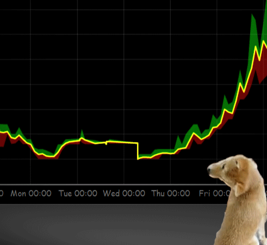

What is a Cryptocurrency?
Cryptocurrency is a form of digital money that is designed to be secure and, in many cases, anonymous. It is
a currency associated with the internet that uses cryptography, the process of converting legible information
into an almost uncrackable code, to track purchases and transfers. Cryptography was born out of the need
for secure communication in the Second World War. It has evolved in the digital era with elements of mathematical
theory and computer science to become a way to secure communications, information and money online.
In other words we can reduce it to a simple definition, you find it to be just limited entries in a database
no one can change without fulfilling specific conditions and this may seem ordinary and simple, but, believe
it or not: this is exactly how you can define a currency.
Bitcoin is the first decentralized digital currency. Bitcoins are digital coins you can send trough the internet,
compared to other alternatives they have a number of advantages:
- They are transferred directly from person to person via the net without going through a bank or a clearingouse. It reduces the fee
- You can use them in every country
- Your account cannot be froze
- There are no prerequisites or arbritary limits
 Bitcoin mining is the process by which transactions are verified and added to the public ledger, known as the block chain,
and also the means through which new bitcoin are released. During mining, your computer performs cryptographic
hashes (two successive SHA256s) on what is called a block header. Because the target is a cumbersome number
with a lot of numbers, a simpler number is usually used to express the current target.
Bitcoin mining is the process by which transactions are verified and added to the public ledger, known as the block chain,
and also the means through which new bitcoin are released. During mining, your computer performs cryptographic
hashes (two successive SHA256s) on what is called a block header. Because the target is a cumbersome number
with a lot of numbers, a simpler number is usually used to express the current target.
This number is called the mining difficulty. The difficulty of mining is calculated by comparing how difficult
it is to generate a block compared to the first block created. This means that a difficulty of 70000 is equivalent
to 70000 times more effort than necessary for Satoshi Nakamoto to generate the first block.
At the time when the mining was much slower and poorly optimized. The difficulty changes every block. The
network is trying to assign the difficulty so that the global computing power takes exactly 14 days to generate
2016 blocks. This is why the difficulty increases with the power of the network. In general the participant
who first solves the puzzle gets to place the next block on the block chain and claim the rewards. The rewards,
which incentivize mining, are both the transaction fees associated with the transactions compiled in the
block as well as newly released bitcoin.
Bitcoin was created in 2009: A software developer called Satoshi Nakamoto proposed bitcoin, which was an electronic payment system based on mathematical proof. The idea was to produce a currency independent of any central authority, transferable electronically, more or less instantly, with very low transaction fees.
Nowadays, there are many more like:
Litecoin 2011:
Provides fast, 2.5 minute transaction confirmations and uses scrypt-based proof-of-work to target everyday
computers. Litecoin, created by an ex-Google employee, Charlie lee, is often considered the silver to Bitcoin's
gold.
Ripple 2012:
Real-time peer-to-peer settlement network. Ripples aren't mined and each transaction destroys a small amount
of XRP. The net effect is a delfationary asset.
DASH 2014:
Aims to be a privacy-centric cryptographic currency with unlinkable transactions using the PrivateSend system.
Blockchain governance is carried out via the MasterNode system.
Ethereum 2015:
Is a decentralized platform that runs smart contracts: applications that run exactly as programmed without
any possibility of downtime, censorship, fraud or third party interference.
The following interactive line graph shows the evolution of these cryptocurrencies on the stock market.
Playing a bit with the graph above. We can see that prices in 2017 have literally exploded. We strongly felt the infatuation by investors for cryptocurrencies. Crypto-currencies are becoming more widespread around the world while Internet payments are accepted by many companies. Crypto-currencies are changing the payment and investment assets, just as the way people invest in gold, silver, market shares, real estate, mutual funds These days. More and more investors are interested in investing money on these crypto-currencies in 2017 and will be more in 2018. With the increased demand for crypto-currencies its prices have greatly increased.
Why has the bitcoin price risen so fast in the last month ( 11.2017) . Bitcoin is a very unpredictable
cryptocurrency but there are some factore that we know are contributing to that climb.
As the Bitcoin reaches 2000$ a trend of investors is rising and clamoring for crypto-currency of all sorts.
Only a few years back digital money was seen as the province of cranks and computers geeks, it has now become
so mainstream that investors see it as a new asset and are creating hundred million dollar hedge funds to
acquire it.
That kind of behaviour was unimaginable a couple of years ago. Other people see digital currencies as an
asset like gold, which can hold its value even with a instability of a government. Recent political reveals
in Brazil and the United States, which led to drops in the dollar and the brazilian currency, may have contributed
to the recent uptick in bitcoin buying.Finally, bitcoin may be gaining indirectly from a recent explosion
in the value of other digital currencies like for example Ethereum and Litecoin. As it is possible to buy
these currencies with dollars or other traditional currencies, it's often simpler or more convienent to use
bitcoins to buy them.
So to say that there is likely chance that more people may be buying bitcoin as transferring currency in
order to acquire other less known cryptocurrencies This year in Japan where the bitcoin has been born, new
rules has been brought where the new currency is being treated inside the banking system In asia , mostly
china has become more permissive for using bitcoin as currency for exchanges between U.S and China. This
also a key factor in the bitcoin related investment that are leading of the price increase
 We can say that 2017 has really
seen the explosion of cryptocurrencies. More and more people are aware of this virtual world and want to
dive into the investments courtyard. Imagine for a moment to believe Stratis token (big green round) by investing
a certain amount. A few months later we end up with an ROI of over 48000%. Who would not dream about that
phenomen?
We can say that 2017 has really
seen the explosion of cryptocurrencies. More and more people are aware of this virtual world and want to
dive into the investments courtyard. Imagine for a moment to believe Stratis token (big green round) by investing
a certain amount. A few months later we end up with an ROI of over 48000%. Who would not dream about that
phenomen?